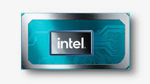

Процесор, він же мікропроцесор, він же центральний процесор, він центральний процесорний (обробний) пристрій (ЦПУ), він же central processing unit (CPU) – як стає зрозуміло з назви – основний елемент апаратного забезпечення обчислювального пристрою, за допомогою якого відбувається обробка інформації.
Саме на технічні характеристики процесора звертають увагу при виборі комп’ютера або сервера, адже чим потрібна продуктивність, тим потужнішим повинен бути «камінь». Так, така назва теж використовується, оскільки процесор виготовляється найчастіше з кристала кремнію.
Трішки історії
Перші процесори комп’ютерів 50-х рр. минулого століття працювали на основі механічного реле, пізніше з’являлися моделі, задействовавшие електронні лампи, потім — транзистори. Самі ж комп’ютери, що використовують ці види процесорів, являли собою величезні, дуже дорогі і складні пристрої.
У 1969 р. компанією Busicom було замовлено 12 мікросхем Intel , призначених для їх власної розробки – настільного калькулятора. Вже тоді у розробників Intel виникла думка – з’єднати декілька мікросхем в одну. Ідея була схвалена керівництвом корпорації, так як технологія дозволяла добре заощадити на виробництві мікросхем, до того ж, фахівці змогли зробити процесор універсальним і використовувати його в багатьох інших пристроях, що виробляють обчислення.
Так з’явився перший мікропроцесор, який отримав назву Intel 4004. Він міг виконувати 60000 операцій в секунду, обробляти двійкові числа. Але процесор так і не змогли застосувати в ПК – їх тоді просто не випускали.
Функції процесора
Щоб краще зрозуміти призначення процесора, звернімося до пристрою. Обов’язкові складові: ядро процесора, що складається з арифметико-логічного пристрою, внутрішньої пам’яті (регістрів) та швидкої пам’яті (кеш), а також шини – пристрої управління всіма операціями та зовнішніми компонентами. Через шини до ЦПУ потрапляє інформація, яку потім обробляє ядро.
Таким чином, в основні функції процесора входить:
обробка інформації за допомогою арифметичних та логічних операцій;
керування роботою всього апаратного забезпечення комп’ютера.
Продуктивність обладнання залежить від характеристик процесора, про які йтиметься далі.
Найпотужніші процесори в комп’ютерах
Бенчмарк Master Lu опублікував рейтинги процесорів настільних комп’ютерів і ноутбуків за третій квартал 2021 року. В одному списку лідирує компанія AMD, а в іншому – її конкурент, Intel.
Рейтинги складено за китайськими даними.
За списком для настільних ПК видно, що перше місце віддали моделі AMD Ryzen Threadripper PRO 3995WX. Це найпотужніший процесор за версією Master Lu. За ним слідують AMD Ryzen Threadripper 3990X і AMD Ryzen Threadripper 3970X. Моделі Intel починаються тільки з шостого місця.
У рейтингу ноутбучних процесорів, навпаки, лідирує Intel. Перше місце належить Intel Core i9-11980HK, друге – Intel Core i9-11900H, а третє – Intel Core i7-11800H. Потім йдуть моделі AMD Ryzen.
Процесори у смартфонах
Процесор смартфона відіграє важливу роль для продуктивності мобільного пристрою, але сам по собі не є запорукою швидкодії та енергоефективності системи. До факторів, що впливають на потужність, крім типу CPU, належать оперативна пам'ять, вид графічних ядер, наявність системи відведення тепла та оптимізація платформи телефону.
CPU Exynos є власною розробкою Samsung, чіпи мають постійну підтримку виробника та відрізняються продуктивністю. Чіпсет Exynos 2100 встановлений у лінійці Samsung Galaxy S21, яка встановила новий рівень потужності серед смартфонів. Процесор Snapdragon 865 Plus використовується у багатьох телефонах різних виробників. Чіп чудово справляється з навантаженнями і підтримує новітні технології, мобільний пристрій з таким процесором здолає будь-які завдання, навіть через кілька років.
Чіп Dimensity 1000+ Mediatek є одним із небагатьох флагманських моделей цього виробника, тому зустрічається рідко. Незважаючи на це, CPU становить конкуренцію іншим потужним архітектурам та забезпечує відмінні показники смартфонам, у яких він встановлений. Вибирати, який процесор краще для смартфона Qualcomm або Mediatek необхідно окремо для кожного пристрою, адже кожна з платформ має свої переваги та виграє у різних напрямках.
Виконав Бігняк Н.О
Групи 5 кн-22б
Джерела:
https://smartik.kiev.ua/dlia-choho-pryznachenyj-protsesor-cpu/
https://samsungshop.com.ua/ru/samsung-news/1145.html
https://itechua.com/news/154385
https://sites.google.com/site/centralnijprocesori/istoria
https://www.youtube.com/watch?v=049_0NOUkyE&ab_channel=%D0%A5%D0%BE%D1%87%D1%83%D0%B7%D0%BD%D0%B0%D1%82%D0%B8